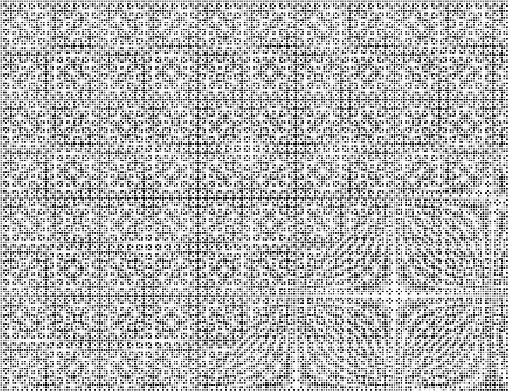

Interference
Visual
"This City Swells" is a music video that provides a unique vantage point of Mumbai City through the use of maps and land use diagrams. By integrating sound and visuals, the video uncovers the texture and vibrancy of the city. The auditory and visual components of the video are a reflection of my personal experiences and emotions while navigating through the city. The video was created by utilizing audio-reactive algorithms that activate different elements of the visuals, resulting in a symbiotic relationship between sound and visuals. Notably, this project marks my maiden endeavor in utilizing algorithms, code, and data to inform my creative outputs.
PART 1
Part2
PART 3

Radial Moire
Line Moire
Interference
Visual
"This City Swells" is a music video that provides a unique vantage point of Mumbai City through the use of maps and land use diagrams. By integrating sound and visuals, the video uncovers the texture and vibrancy of the city. The auditory and visual components of the video are a reflection of my personal experiences and emotions while navigating through the city. The video was created by utilizing audio-reactive algorithms that activate different elements of the visuals, resulting in a symbiotic relationship between sound and visuals. Notably, this project marks my maiden endeavor in utilizing algorithms, code, and data to inform my creative outputs.
The project originated from an arts residency held in Mumbai in February 2020, just before the outbreak of the pandemic. As sound-based artists and musicians with an interest in visual fields, we were tasked with developing an audio-visual piece on a theme of our choice. I chose to explore the theme of "Urbanism of Mumbai". Despite preferring the calm of the countryside and not being a resident of a metropolis, every time I visit Mumbai, I'm immediately hit by the shift of pace and the frenzied nature of city life. Often, this shift almost felt like a high. As a result, this project aimed to capture the vibrancy and energy of the city through the medium of sound and music.
This was an opportunity for me to challenge myself both creatively and technically. Although I did not have prior experience in animation, I was determined to establish a comfortable process. As an architecture graduate, I have always had a fascination with maps and their ability to communicate the history and aspirations of cities. Land-use maps, in particular, offered a wealth of information on the patterns of settlement and demographic structure of the city. What also intrigued me about maps was their visual appeal, which I aimed to integrate into the animations. To achieve this, I utilized open-source maps and CAD plans of the city to create animations in software that I was familiar with. A crucial aspect of the music video was the use of land-use maps of Mumbai that had various zones of colour which represented the different land-use types of the city. I utilized a technique that separated these zones using their respective colours and triggered each colour using audio triggers. For instance, the yellow zone was revealed with a kick drum, and the purple zone was triggered using hi-hats.
The Selector-Pro residency was aimed at musicians who work with filmmakers, visual artists and game designers. It explored the creation of interactive works in tandem with new media artists, as well as to produce new screen-based art for exhibitions in India and beyond. The participants were granted access to "Island City Studios" throughout the duration of the residency, which is regarded as one of the most highly-equipped professional recording studios in Mumbai. The residency also included talks given by mentors who detailed their approaches to the production of audio-visual content. The participants of the residency were drawn from a diverse range of backgrounds, including established choir conductors, rappers, indie musicians, and radio presenters.
While the idea for this project was conceived during the 4-day residency, the bulk of this video took over 3 months to flesh out and develop. Upon completion of the music video, I partnered with "Skip-a-Beat" - which is an electronic music label from Mumbai headed by Tejas Nair(Spryk) for the release of the song and video. The video was released on 4th September 2020.
The project originated from an arts residency held in Mumbai in February 2020, just before the outbreak of the pandemic. As sound-based artists and musicians with an interest in visual fields, we were tasked with developing an audio-visual piece on a theme of our choice. I chose to explore the theme of "Urbanism of Mumbai". Despite preferring the calm of the countryside and not being a resident of a metropolis, every time I visit Mumbai, I'm immediately hit by the shift of pace and the frenzied nature of city life. Often, this shift almost felt like a high. As a result, this project aimed to capture the vibrancy and energy of the city through the medium of sound and music.
This was an opportunity for me to challenge myself both creatively and technically. Although I did not have prior experience in animation, I was determined to establish a comfortable process. As an architecture graduate, I have always had a fascination with maps and their ability to communicate the history and aspirations of cities. Land-use maps, in particular, offered a wealth of information on the patterns of settlement and demographic structure of the city. What also intrigued me about maps was their visual appeal, which I aimed to integrate into the animations. To achieve this, I utilized open-source maps and CAD plans of the city to create animations in software that I was familiar with. A crucial aspect of the music video was the use of land-use maps of Mumbai that had various zones of colour which represented the different land-use types of the city. I utilized a technique that separated these zones using their respective colours and triggered each colour using audio triggers. For instance, the yellow zone was revealed with a kick drum, and the purple zone was triggered using hi-hats.
The Selector-Pro residency was aimed at musicians who work with filmmakers, visual artists and game designers. It explored the creation of interactive works in tandem with new media artists, as well as to produce new screen-based art for exhibitions in India and beyond. The participants were granted access to "Island City Studios" throughout the duration of the residency, which is regarded as one of the most highly-equipped professional recording studios in Mumbai. The residency also included talks given by mentors who detailed their approaches to the production of audio-visual content. The participants of the residency were drawn from a diverse range of backgrounds, including established choir conductors, rappers, indie musicians, and radio presenters.
While the idea for this project was conceived during the 4-day residency, the bulk of this video took over 3 months to flesh out and develop. Upon completion of the music video, I partnered with "Skip-a-Beat" - which is an electronic music label from Mumbai headed by Tejas Nair(Spryk) for the release of the song and video. The video was released on 4th September 2020.